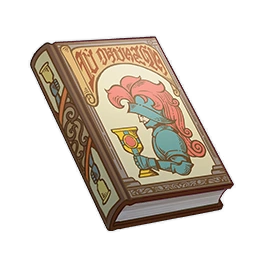

Fontaine · Books & Literature
La Chanson d'Erinnyes
This three-volume Fontaine epic presents Erinnyes as a rebel knight; weapon and artifact records preserve a less romantic, conflicting account.

Three episodes from a longer chivalric poem
La Chanson d'Erinnyes is a three-volume Fontaine book collection. Its surviving volumes identify themselves as separate chapters and parts of a larger song: Volumes I and II both draw from Chapter 6, while Volume III comes from Chapter 20. The collection therefore preserves selected episodes rather than a continuous account of Erinnyes's life.
The poem's title and knightly cast frame Erinnyes as the central hero. It does not name an author, and its formal speeches, battles, and farewell to Egeria belong to the literary telling, which should be read alongside—not in place of—the other records of the historical Lochknight.
Volume I: a demand for water, earth, and allegiance
Volume I places Erinnyes after she has defeated three regional princes and received their allegiance. During a feast at Aremori Castle, a musician arrives as King Remus's emissary and demands water and earth from her land, along with submission to the Sumphonia Capitolii. He warns that refusal will bring destruction.
Erinnyes rejects the claim that Remus has authority over her. The emissary counters that Remus ended wars, hunger, and plague and hopes to protect people from rising waters. The exchange gives both sides a political argument: the poem presents a threat to Aremorica, while Remus's envoy frames imperial rule as protection from a coming disaster.
Volume II: the knights choose resistance
In Volume II, knights from several regions urge Erinnyes not to trust Remus's promises. They describe the proposed harmony as a deception and pledge their swords against the Capitoliani. Erinnyes declares that her allegiance is to the Mistress of Many Waters, not to a monarch, and vows to drive the invaders from the land.
This episode turns the political dispute into a heroic resistance song. Its language sanctifies Erinnyes's cause and her knights' violence, so it is useful evidence for the poem's own moral framing rather than an impartial account of every action in the war.
Volume III: the Pure Grail and the sword's return
Volume III follows Erinnyes's farewell to the Mistress of Many Waters. Erinnyes says that Egeria showed her the Pure Grail and allowed her journey to end. She asks that the surviving knights continue serving the goddess, admits to grave sins, and seeks exile rather than forgiveness.
She then tries three times to return her sword, Hauteclaire, to the lake. The blade floats back twice and sinks on the third attempt. Erinnyes leaves with a spirit that had accompanied her, and the poem says that no one sees her again.
The poem and the historical records differ
The weapon story of Splendor of Tranquil Waters and the Song of Days Past artifacts describe a different end to Erinnyes's search: she never finds the Pure Grail, and Egeria's answer to her plea leaves her faith shattered. The poem instead has Egeria reveal the Grail and grant Erinnyes's wish, although it also preserves Erinnyes's confession, self-condemnation, and departure.
The book casts Erinnyes as a noble champion of Egeria. Other sources complicate that portrait: the artifacts say she forced rival tribes to swear allegiance, while the Remurian report Investigation of the Northern Barbarians portrays her as a false prophet and criminal. That report is openly imperial and hostile, so it is evidence for the Remurian view—not a neutral verdict on her character.
What this collection can establish
The collection shows how a later literary tradition turned Erinnyes's resistance into a chivalric epic about loyalty, war, sin, and a final departure. The names and events can be checked against the separate Remurian report, the sword's account, and the Song of Days Past artifact set, each of which supplies a different perspective on her life.
Do not use the poem alone to settle whether Erinnyes found the Pure Grail, what Egeria told her, or why she disappeared. The surviving volumes are selected, stylized episodes, and the stronger historical comparison comes from reading them against the other in-game records rather than treating one version as a complete biography.
This is an original CoreGG reading guide, not an official HoYoverse article or a reproduction of the game text. Source links below identify the records used so you can check the original context.
Sources & references
Check these sources for the original game text and reference trail.
- Genshin Impact Wiki · three-volume book collection
- Gachabase · La Chanson d’Erinnyes, all three volumes
- Honey Hunter · Investigation of the Northern Barbarians
- HoYoDex · Erinnyes historical profile
- HoYoDex · Splendor of Tranquil Waters weapon story
- Gachabase · Song of Days Past artifact stories
- HoYoWiki · Books index
- HoYoverse · In-game Books Archive